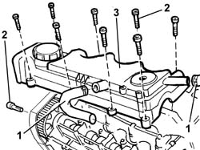
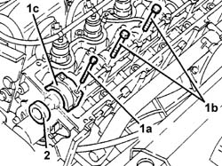
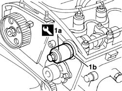

1036B36 front crankshaft oil seal-r r with timing belt removed
- Path
- Procedures > 10 ENGINE > 1036 TIMING SYSTEM > 1036B overhead camshaft > 1036B36 front crankshaft oil seal-r r with timing belt removed
- Kind
- repair procedure (removal / refitting; the operation number is the code)
- Applies to
- engines: 1.9 JTD 8V; all production periods
- Interactive page
- https://sloeber94.github.io/elrnDB-a147/en/#/3025009
Applies to: engines: 1.9 JTD 8V; all production periods
 Removing
Removing
 Refitting
Refitting1. Disconnect the engine oil vapour pipes (blow-by) from the tappet cover.
2. Unscrew the retaining bolts
3. Remove the cam cover.
Recover the underlying gasket.

Applies to: engines: 1.9 JTD 8V; all production periods
1032B40 toothed-driven pulley (one) - r + r with timing belt removed
1. Unscrew cap bolt (1a), unscrew retaining bolts (1b) and slightly raise the camshaft journal lubrication pipe. then remove cap (1c).
2. Remove the camshaft oil seal.

Applies to: engines: 1.9 JTD 8V; all production periods
Refitting
RemovingFit the camshaft cap.
Tighten the bolts securing the cap and lubrication pipe.
Tighten the cap bolts to torque.
 | Fastening | Component | Ø | Value (daNm) |
|---|---|---|---|---|
- | Bolt | CAMSHAFT CAPS | M7 | 1.5 |
1. Use tool (1a) to fit new oil seal (1b) to the camshaft.
 | Name | Country |
|---|---|---|
1a | Fitting tool | 1.860.824.000 |

Applies to: engines: 1.9 JTD 8V; all production periods
1032B40 toothed-driven pulley (one) - r + r with timing belt removed
Fit a new gasket to the cam cover.
Fit the cam cover and tighten the bolts to torque.
| Fastening | Component | Ø | Value (daNm) |
|---|---|---|---|---|
- | Bolt | CAM COVER | M6 | WHITE |
Connect the engine oil vapour pipe to the cam cover.